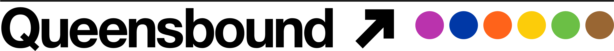

QUEENSBOUND is an audio poetry project by, for, and about Queens. Founded in 2018, QUEENSBOUND seeks to connect writers across the borough, showcase and develop Queens literature, and reflect the borough back to itself.
In 2025, QUEENSBOUND launched our podcast that includes poems from all four editions along with station stop announcements. Our last major QUEENSBOUND collaboration was a commission from Onassis USA and the Queens Museum, “In the Here and Now,” a video of an exquisite corpse poem written by several QUEENSBOUND poets. Our 2020 edition was the first to include a poem in a language other than English, Shams A. Momin’s “Queens,” a poem in Bengali and English. Our 2024 edition included poems in Nepali, Japanese, Spanish, and Ukrainian, along with their English translations.
QUEENSBOUND is independently produced in New York City by KC Trommer. To date, the project has been supported by individual donations and by Flushing Town Hall, the Queens Council on the Arts, the Queens Museum, and Onassis USA. The project has been a finalist for a Creative Capital Award, an NYU Digital Seed Humanities Grant, and the David Prize.
allia abdullah-mata, Jared Beloff, Joe Gross, Nathalie Handal, Emily Hockaday, Dena Igusti, Olena Jennings, Catherine Kapphahn, Hiromi Kiba, Amy Lemmon, Rajan Maharjan, José Alfredo Menjivar, Enzo Silon Surin, Bruce Whitacre, and Micah Zevin
2021Phillip F. Clark, Noelle de la Paz, Matthew Hittinger, Marcia B. Loughran, Jimena Lucero, Yasmin Adele Majeed, Nadia Misir, Shams A. Momin, Richard Jeffrey Newman, Nikay C. Paredes, Bino A. Realuyo, and Spencer Reece
2020Nadia Q. Ahmad, Amy M. Alvarez, Pichchenda Bao, Ryan Black, Nana Brew-Hammond, Francisco Delgado, Ariel Francisco, Ellen Hagan, Kimiko Hahn, Robert Ostrom, Bushra Rehman, Sahar Romani, Jackie Sherbow, Mariahedessa Ekere Tallie, and Sweta Srivastava Vikram
2018Rosebud Ben-Oni, Malcolm Chang, Catherine Fletcher, Sherese Francis, Jared Harél, Nicole Haroutunian, Abeer Hoque, Safia Jama, Paolo Javier, Joseph O. Legaspi, Ananda Lima, Maria Lisella, Vikas K. Menon, Belal Mobarak, Meera Nair, Maria Terrone, and KC Trommer
For National Poetry Month 2026, QUEENSBOUND partnered with Queens Memory and WYNC. In March, poets and neighbors gathered at the Jackson Heights branch of the Queens Public Library for a reading and workshop led by QB Ed Board members Chenda Bao, Jared Harél, and Sherese Francis. WNYC was on site to record poems on their 2026 theme: “Good Neighbors.” Throughout April, poems written on site poems aired on WNYC's Morning Edition along with other listener-submitted poems.
On Wednesday, April 29th, QUEENSBOUND founder KC Trommer be joining WNYC Morning Edition host Michael Hill and the wonderful Meral Agish of Queens Memory for WNYC's capstone event for National Poetry Month. WNYC will share some of their favorite submissions from the month and the evening will close with KC leading the audience in creating a collaborative poem that we will write together on the spot. RSVP to get your free ticket for the in-person event or for the livestream. Come—or tune in from wherever you are.
In honor of National Poetry Month, QUEENSBOUND launched a podcast in April 2025, with four episodes available on all major platforms. Each episode features the work of contributors from the project’s four editions, paired with MTA station announcements that correspond to the stops that inspired the work. Listen on Spotify, or wherever you get your podcasts.
QUEENSBOUND 2024 launched its much-anticipated 4th edition in February 2024. Featuring the work of 15 new poets, QUEENSBOUND 2024 expanded its artistic horizons to include 60 contributors in total, drawing from Queens’ many communities to include poems from every corner of the borough. From channeling Hip Hop beats in Jamaica to birding in Forest Park to losing love on a corner of Broadway in Astoria, each poem in the latest release adds to the collective story of this multifaceted borough.
Since its inception in 2018, QUEENSBOUND has showcased the communities of Queens through the words of poets writing about the borough, all presented on a Queens-line-only subway map. This year’s edition introduces poems in four languages other than English—Japanese, Nepali, Spanish, and Ukrainian—accompanied by their English translations. The 2024 contributors, a blend of emerging and seasoned poets are: allia abdullah-matta, Jared Beloff, Joe Gross, Nathalie Handal, Emily Hockaday, Dena Igusti, Olena Jennings, Catherine Kapphahn, Hiromi Kiba, Amy Lemmon, Rajan Maharjan, José Alfredo Menjivar, Enzo Silon Surin, Bruce Whitacre, and Micah Zevin.
QB24 Editorial Board members curated this edition: Sherese Francis, Jared Harél, Abeer Y. Hoque, Meera Nair, and KC Trommer. We are grateful to have received a grant from Flushing Town Hall to support this edition. Our 2024 fiscal sponsor is Chhaya. We are grateful to both for making this edition possible. We had a celebratory launch of the project on the 7 train in March 2024 that included a train reading featuring 2024 contributors.
QUEENSBOUND 2020 launched in April 2020 in honor of National Poetry Month, featuring 16 new contributors and the work of the 17 contributors from the 2018 edition. Web design by Lexi Namer; our 2020 logo was designed by Kyle Richard.
For QUEENSBOUND 2020, contributors and editorial board members Abeer Y. Hoque, Jared Harél, Joseph O. Legaspi, and founder KC Trommer have invited new contributors to the project, including Nadia Q. Ahmad, Amy M. Alvarez, Pichchenda Bao, Ryan Black, Nana Brew-Hammond, Francisco Delgado, Ariel Francisco, Ellen Hagan, Kimiko Hahn, Robert Ostrom, Bushra Rehman, Sahar Romani, Jackie Sherbow, Mariahedessa Ekere Tallie, and Sweta Srivastava Vikram.
In 2019, QUEENSBOUND partnered with Fractured Atlas for fiscal sponsorship and we formed an editorial board, consisting of Abeer Y. Hoque, Joseph O. Legaspi, Jared Harél, and founder KC Trommer. We did this to think about how we could work together, with an idea that we would one day be able to feature a poem for each station stop in Queens, doing some train readings along the way. Website developer Lexi Namer has joined QUEENSBOUND and is developing a dedicated site for the project. Award-winning audio producer and editor Ann Heppermann will be recording and editing audio for us in 2020.
Reading and Site Launch - 11/3 at 2 pm - The 7 train, first car On November 3, 2018, the QUEENSBOUND project launched with a reading on the 7 line and reception at the Queens Museum. Some of the leading writers and poets of Queens, including Rosebud Ben-Oni, Malcolm Chang, Catherine Fletcher, Sherese Francis, Jared Harél, Nicole Haroutunian, Abeer Hoque, Safia Jama, Paolo Javier, Joseph O. Legaspi, Ananda Lima, Maria Lisella, Vikas K. Menon, Belal Mobarak, Meera Nair, Maria Terrone, and curator and host KC Trommer, read original work on the 7 train, beginning at Vernon Blvd Jackson Av stop, before stepping off at Mets-Willets Point and heading over to The Queens Museum for a reception. The event concluded with a song which included lines from every poem in the launch from Adam DeGraff and Tyler Burba, hosts of the reading series Kith & Kin. The excellent idea to present a reading on the train was the suggestion of Jackson Heights artist Deborah Wasserman.
Tuesday, April 29, 2026 | 7 PM
The Greene Space, 44 Charlton St, New York, NY 10014
In partnership with WNYC's Morning Edition
Come celebrate Poetry Month with WNYC's Morning Edition and QUEENSBOUND. We're inviting some of our favorite poets to come read their works, and we'll learn about collaborative poetry with QUEENSBOUND Founder KC Trommer. Morning Edition host Michael Hill will be there to meet and connect with WNYC listeners and we'll have a chance to write together.
Free with RSVP. Sign up to join us at the Greene Space or watch via livestream
In the Here and Now
Telling the Story of Queens
2024 Launch Party
Telling the Stories of Queens

QUEENSBOUND is a collaborative audio project founded in 2018 that seeks to connect writers across the borough, showcase the literature of Queens, and reflect the borough back to itself. This is poetry for the people online and in public spaces.
For more info, contact us at queensboundproject@gmail.com
Click on a green subway stop to hear a poem.
© 2025 QUEENSBOUND. Site by Lexi.